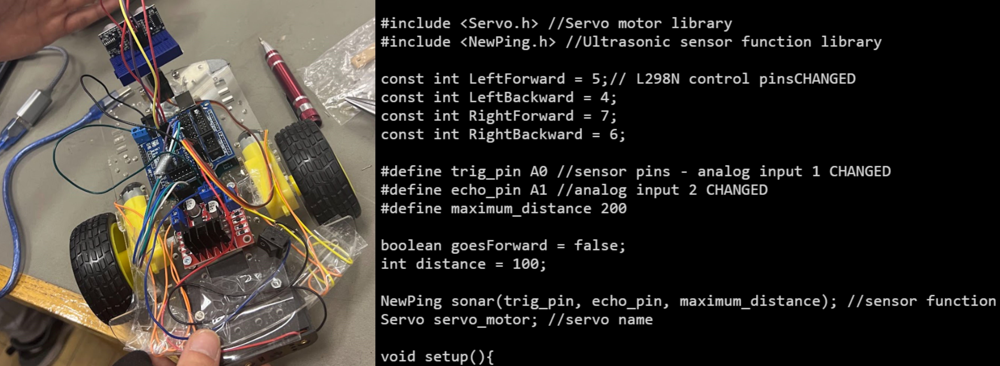

Obstacle Avoidance Buggy
 Image taken by Me
C++
Arduino
Soldering
Status: Completed
Work Done
Establish the circuitry pathway by connecting the motors to the H-bridge circuit on the motor board, subsequently linking it to the Arduino microcontroller. Route ultrasound sensors to the analogue pins and connect the Servo motor to the microcontroller.
Experimented with different signal values from the ultrasound sensor to determine values to avoid obstacles.
Programmed ultrasound sensor input to control the motor speed and direction.
Ultrasound sensor mounted on servo motors to allow the buggy to "turn its head"
Challenges
Encountered issues with soldered wires detaching from the buggy motors.
Synchronization logic of servo motors with the ultrasound sensor to navigate obstacles algorithm.